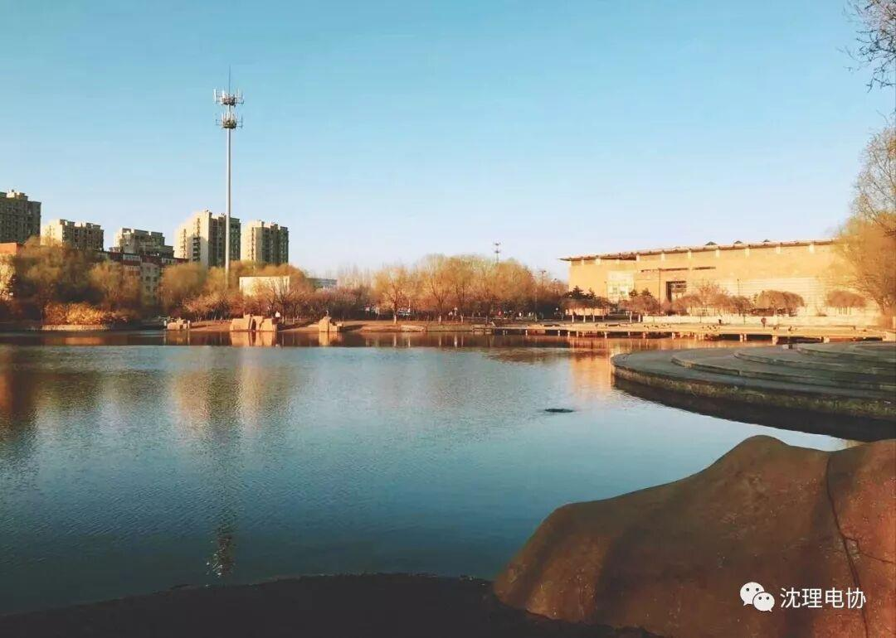

只要你想，每天都是新鲜的
只要你想，每天都是新鲜的
走在站在沈理的路上，清晨的阳光，吹来四月的暖风，路边的桃花香，以及琴湖波澜不惊的水纹，新的一天在地平线上升起。你，准备好开始奔跑了吗？



越来越觉得时间过太快，就像朱自清在《匆匆》里描写的那样：洗手的时候，日子从水盆里过去；吃饭的时候，日子从饭碗里过去；默默时，便从凝然的双眼前过去。对于我们来说，时间不够用不是我们太忙，而是我们浪费的时间实在太多。
4
早上一睁眼已经九点，赶紧起床拉开窗帘，看到了瓦蓝的天空，和校园里春暖花开的景象，这么好的天气居然起这么晚，简直太浪费，浪费就是犯罪。早起的人很多，早起躺在床上玩手机的人很多，玩着玩着又睡着了的人也很多。

思维模式有多重要，我觉得春暖花开，新的一季才刚刚开始，而有些人会说已经过了一年中的三份分之一，正是这样才提醒了我们一件事：你已浪费了将近四个月的时间。 想去的地方没有去，想谈的恋爱没有谈，想做的事还是没有做。日历一页页翻，时间一点点走。等待也好，迷茫也好，都不要把自己留在原地。只要你下定决心，每一天都可以是新的开始。
SPRING
美丽的春天
爱也是有期限的，让这份期限长些长些再长些，让爱流经生命的每一处。

Spring Time
天再高又怎样，踮起脚尖就更接近阳光。未来的每天都如阳光般美好。
——编辑：符阳懿